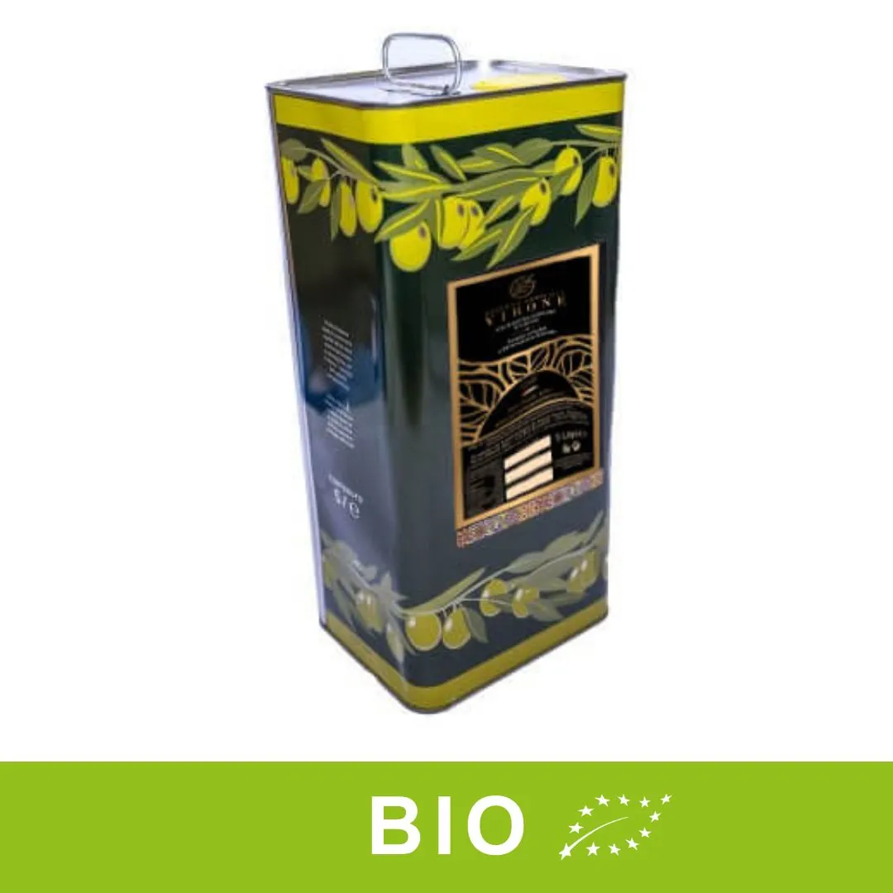
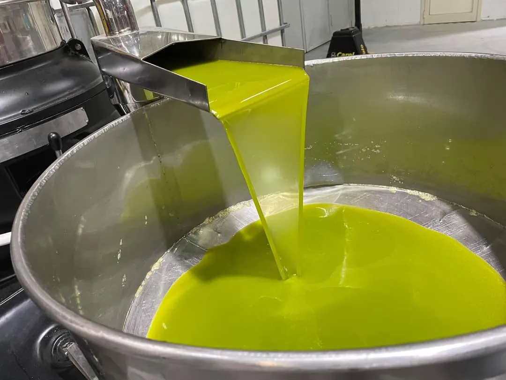
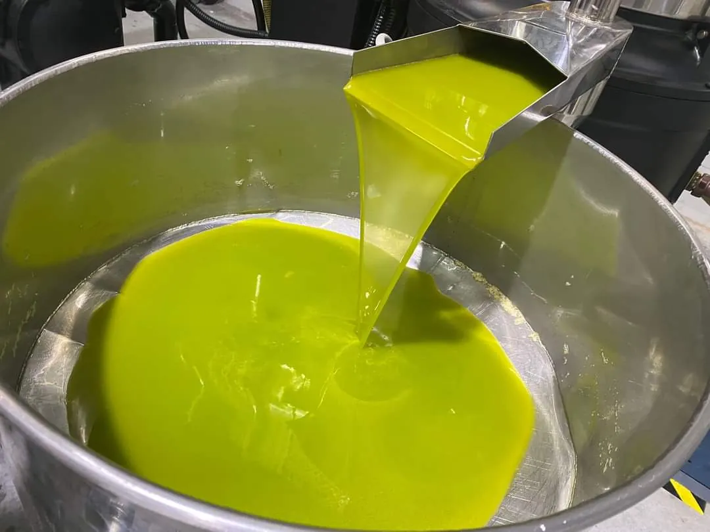
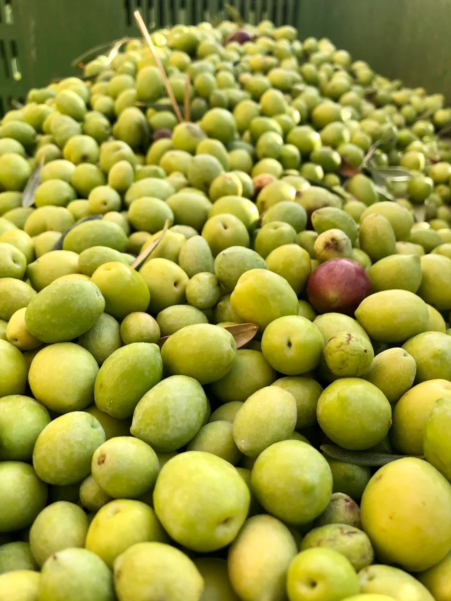

Home / Olio extravergine BIO / Olio extravergine di oliva BIO – latta 3 L




Olio extravergine di oliva BIO – latta 3 L
Disponibile raccolta 2026/27
Spedizione gratuita sopra la soglia 39,90 € o 49,90 €: il sito indica due importi diversi, da unificare · pacco danneggiato: rimborso o sostituzione · paghi con carta, PayPal, Amazon Pay, bonifico o contrassegno
Olio nuovo da olive biologiche, gusto fruttato medio-leggero, dolce e delicato. Per condire a crudo e per cucinare.
Com'è
Ottenuto da olive coltivate senza pesticidi, diserbanti o prodotti chimici di sintesi. Il gusto è fruttato e delicato: ideale su insalate e bruschette, ma regge anche cotture, sughi e fritture.
Disponibile anche nei formati da 5 e 10 litri, con lo stesso sconto del 20% sull’olio nuovo.
Dati del prodotto
| Formato | latta da 3 litri |
|---|---|
| Campagna | 2026/2027 (olio nuovo) |
| Olive | da agricoltura biologica |
| Acidità | tra 0,1% e 0,5% |
| Gusto | fruttato medio-leggero, dolce |
| Produttore | Azienda Agricola Virone, Ribera (AG) |
Recensioni
Assaggiato l’olio in questione erano anni che non sentivo il profumo di olive, sublime!valter · 5/5 · recensione verificata sul sito
Spedizione
Gli agrumi partono solo lunedì e martedì, così arrivano freschi. Dal magazzino di smistamento di Parma la consegna è in 24/48 ore; corrieri Amazon Prime (un solo collo) o Bartolini (più colli).
Tutte le informazioni su spedizioni e pagamenti →